Fuse Wire
Materials used for Fuse Wires
Fuse Wire Rating
Some Important Terms need for Fuse
Current Carrying Capacity of Fuse Wire
Fuse Law
Rewirable or Kit Kat Fuse Unit
Cartridge Fuse
Lead – tin Alloy Fuse Wire or Eutectic Alloy Fuse Wire
HRC Fuse or High Rupturing Capacity Fuse
Operation of HRC Fuse
Electrical Fuse
In normal working condition of electrical network, the electric current flows through the network is within the rated limit. If fault occurs in the network mainly phase to phase short circuit fault or phase to ground fault, the network electric current crosses the rated limits. This high electric current may have very high thermal effect which will cause a permanent damage to the valuable equipments connected in the electrical network. So this high fault electric current should be interrupted as fast as possible. This is what an electrical fuse does. A fuse is a part of the circuit which consists of conductor which melts easily and breaks the connection when electric current exceeds the predetermined value.
An electrical fuse is a weakest part of an electrical circuit which breaks when more than predetermined electric current flows through it.
Fuse Wire
The function of fuse wire is to carry the normal electric current without excessive heating but more than normal electric current when pass through fuse wire, it rapidly heats up and melts.
Materials used for Fuse Wires
The materials used for fuse wires are mainly tin, lead, zinc, silver, antimony, copper, aluminum etc.
Fuse Wire Rating
The melting point and specific resistance of different metals used for fuse wire
| Metal | Melting point | Specific Resistance |
|---|---|---|
| Aluminium | 240oF | 2.86 μ Ω - cm |
| Copper | 2000oF | 1.72 μ Ω - cm |
| Lead | 624oF | 21.0 μ Ω - cm |
| Silver | 1830oF | 1.64 μ Ω - cm |
| Tin | 463oF | 11.3 μ Ω - cm |
| Zinc | 787oF | 6.1 μ Ω - cm |
Some Important Terms need for Fuse
- Fuse it is already defined earlier.
- Fuse wire, it is also defined earlier.
- Minimum Fusing Current : It is minimum value of electric current due to which fuse melts.
- Current Rating of Fuse : It is maximum value of electric current due to which fuse does not get melt.
- Fusing Factor : This is the ratio of minimum fusing electric current and electric current rating of fuse.
Therefore, fusing factor = Minimum fusing electric current / electric current rating of fuse.
The value of fusing factor is always more than 1. - Prospective Current in Fuse: Before melting, the fuse element has to carry the short circuit electric current through it.The prospective electric current is defined as the value of electric current which would flow through the fuse immediately after a short circuit occurs in the network.
- Melting Time of Fuse or Pre-arcing Time of Fuse: This is the time taken by an fuse wire to be broken by melting. It is counted from the instant, the over electric current starts to flow through fuse, to the instant when fuse wire is just broken by melting.
- Arcing Time of Fuse: After breaking of fuse wire there will be an arcing between both melted tips of the wire which will be extinguished at the electric current zero. The time accounted from the instant of arc initiated to the instant of arc being extinguished is known as arcing time of fuse.
- Operating Time of Fuse : When ever over rated electric current starts to flow through a fuse wire, it takes a time to be melted and disconnected, and just after that the arcing stars between the melted tips of the fuse wire, which is finally extinguished. The operating time of fuse is the time gap between the instant when the over rated electric current just starts to flow through the fuse and the instant when the arc in fuse finally extinguished. That means operating time of fuse = melting time + arcing time of fuse.
Current Carrying Capacity of Fuse Wire
Current carrying capacity of a fuse wire depends upon numbers of factors like, what material used for it, what are the dimension of it, i.e. diameter and length, size and shape of terminals used to connect it, and the surrounding.
Fuse Law
Fuse law determines the electric current carrying capacity of a fuse wire. The law can be established in the following way. At steady state condition that is when fuse carry normal electric current without increasing its temperature to the melting limit. That means at this steady state condition, heat generated due to electric current through fuse wire is equal to heat dissipated from it.
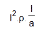
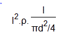
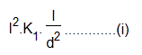
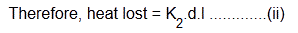
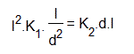
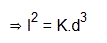
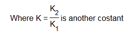
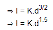
| Metal | value of K when d is measured in mm |
|---|---|
| Aluminium | 59 |
| Copper | 80 |
| Iron | 24.6 |
| Lead | 10.8 |
Rewirable or Kit Kat Fuse Unit
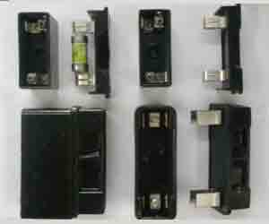
Cartridge Fuse
Lead – tin Alloy Fuse Wire or Eutectic Alloy Fuse Wire
2. The alloy metal is quite homogeneous.
3. If the fusing characteristics of eutectic alloy and other composition of alloys is studied there is only one arrest point in eutectic alloy as compared to two other types of alloys.
Approximate fusing currents of lead – tin alloy fuse wire in air
| Diameter of wire in inch |
Fusing Current in A |
Maximum safe Current in A |
|---|---|---|
| 0.02 | 3 | 2 |
| 0.022 | 3.5 | 2.3 |
| 0.024 | 4 | 2.6 |
| 0.028 | 5 | 3.3 |
| 0.032 | 6 | 4.1 |
| 0.036 | 7 | 4.8 |
| 0.048 | 10 | 7 |
| 0.064 | 16 | 11 |
HRC Fuse or High Rupturing Capacity Fuse
| 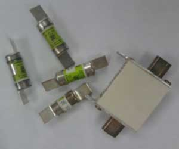 | 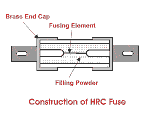 |
The enclosure of HRC fuse is either of glass or some other chemical compound. This enclosure is fully air tight to avoid the effect of atmosphere on the fuse materials. The ceramic enclosure having metal end cap at both heads, to which fusible silver wire is welded. The space within the enclosure, surrounding the fuse wire or fuse element is completely packed with a filling powder. This type of fuse is reliable and has inverse time characteristic, that means if the fault electric current is high then rupture time is less and if fault electric current is not so high then rupture time is long.
 by
by